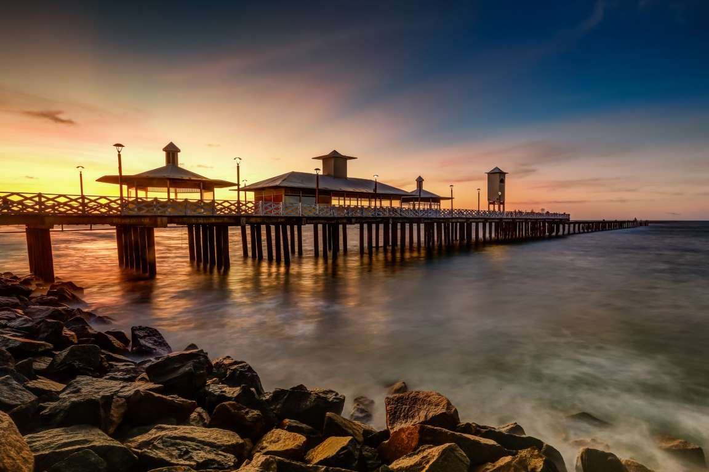
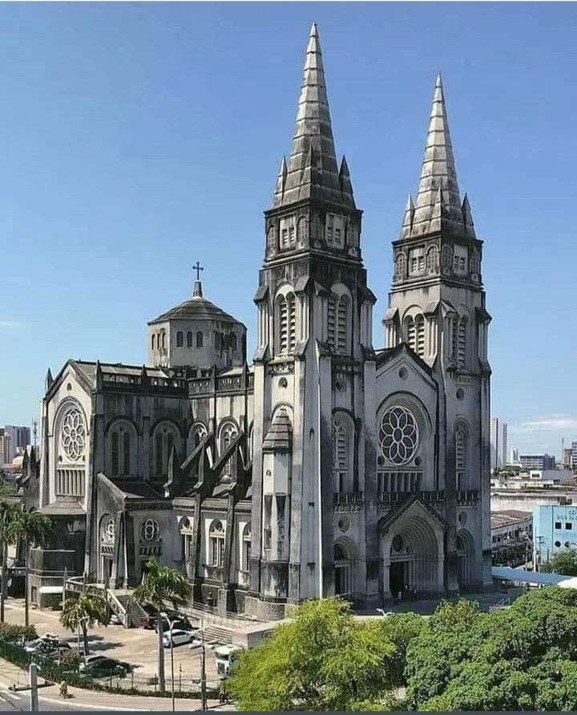
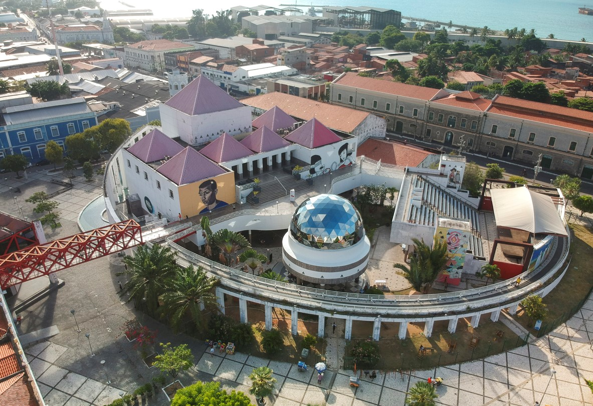
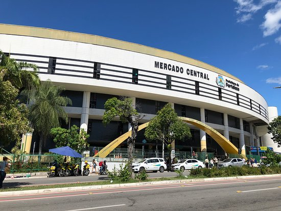
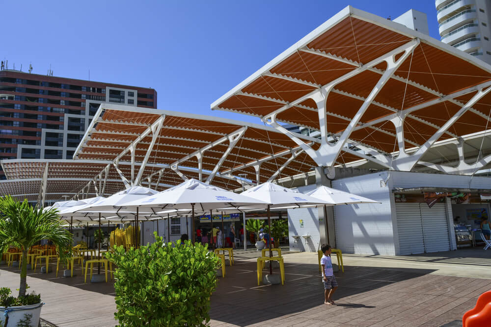

Estátua de Iracema Guardiã
Localizada a poucos passos do hotel. A famosa estátua em homenagem à personagem de José de Alencar é um dos grandes símbolos da orla de Fortaleza.

Ponte Metálica (Ponte dos Ingleses)
Um dos cenários mais bonitos de Fortaleza para apreciar o pôr do sol e contemplar a vista do mar na Praia de Iracema.

Catedral Metropolitana de Fortaleza
A Catedral Metropolitana de Fortaleza, dedicada a São José, é um marco arquitetônico e cultural da cidade. Construída no estilo gótico romano, a catedral foi inaugurada em 1978 após quase quarenta anos de construção.

Feirinha da Beira Mar
Tradicional feira ao ar livre repleta de artesanato cearense, rendas, castanhas e lembranças de viagem à beira-mar.

Centro Dragão do Mar
Centro cultural vibrante reunindo museus, planetário, galerias de arte, salas de cinema e vida noturna com gastronomia local.

Mercado Central de Fortaleza
O maior centro comercial de artesanato regional do Nordeste, ideal para provar pratos típicos e levar produtos locais.

Mercado dos Peixes de Fortaleza
Experiência gastronômica única à beira-mar no Mucuripe: compre frutos do mar frescos e solicite o preparo imediato nas barracas.